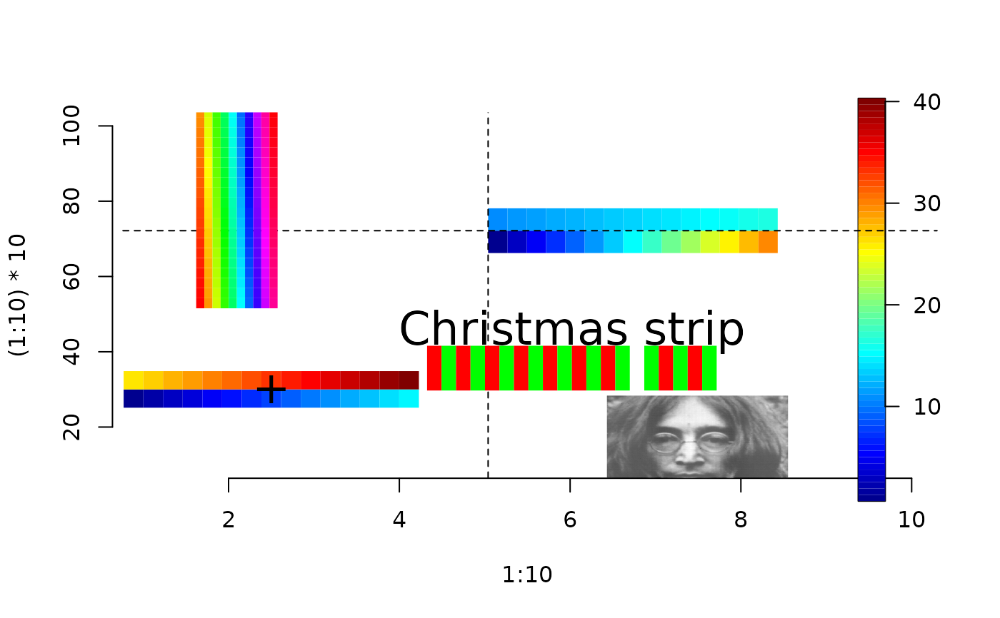

colorbar.plot.RdAdds one or more color scales in a horizontal orientation, vertical orientation to an existing plot.
colorbar.plot(x, y, strip, strip.width = 0.1, strip.length = 4 * strip.width,
zrange = NULL, adj.x = 0.5, adj.y = 0.5, col = tim.colors(256),
horizontal = TRUE, ...)x position of strip in user coordinates
y position of strip in user coordinates
Either a vector or matrix giving the values of the color strip(s). If a matrix then strips are assumed to be the columns.
Width of strip as a fraction of the plotting region.
Length of strip as a function of the plotting region. Default is a pleasing 8 times width.
If a vector these are the common limits used for assigning the color scale. Default is to use the range of values in strip. If a two column matrix, rows are used as the limits for each strip.
Location of strip relative to x coordinate. Most
common values are .5 (centered), 0 (right end at x) and 1 (left end of
at x). These are the same conventions that are used for adj in
positioning text.
Location of strip relative to y coordinate.
Same rules as adj.x
Color table used for strip. Default is our favorite tim.colors being a scale from a dark blue to dark red.
If TRUE draws strips horizontally. If FALSE strips are drawn vertically
optional graphical arguments that are passed to
the image function.
This function draws the strips as a sequence of image plots added to the
existing plot. The main work is in creating a grid ( x,y) for the image
that makes sense when superimposed on the plot.
Note that although the columns of strip are considered as
separate strips these can be oriented either horizontally or vertically
based on the value of horizontal. The rows of zrange are
essentially the zlim argument passed to the image function
when each strip is drawn.
Don't forget to use locator to interactively determine positions.
text can be used to label points neatly in conjunction with
setting adj.x and adj.y. Although this function is inefficient for
placing images at arbitrary locations on a plot the code can be easily
adapted to do this.
This function was created to depict univariate posterior distribution on a map. The values are quantiles of the distribution and the strips when added under a common color scale give an overall impression of location and scale for several distributions.
image.plot, arrow.plot, add.image
# set up a plot but don't plot points and no "box"
plot( 1:10, (1:10)*10, type="n", bty="n")
# of course this could be anything
y<- cbind( 1:15, (1:15)+25)
colorbar.plot( 2.5, 30, y)
points( 2.5,30, pch="+", cex=2, adj=.5)
# note that strip is still in 1:8 aspect even though plot has very
# different ranges for x and y.
# adding legend using image.plot
zr<- range( c( y))
image.plot( legend.only=TRUE, zlim= zr)
# see help(image.plot) to create more room in margin etc.
zr<- rbind( c(1,20), c(1,100)) # separate ranges for columns of y.
colorbar.plot( 5, 70, y, adj.x=0, zrange= zr)
# some reference lines to show placement
xline( 5, lty=2) # strip starts at x=5
yline(70, lty=2) # strip is centered around y=7 (because adj.y=.5 by default)
# many strips on common scale.
y<- matrix( 1:200, ncol=10)
colorbar.plot( 2, 75, y, horizontal=FALSE, col=rainbow(256))
# Xmas strip
y<- cbind( rep( c(1,2),10))
y[15] <- NA # NA's should work
colorbar.plot( 6, 45, y, adj.y=1,col=c("red", "green"))
text(6,48,"Christmas strip", cex=2)
# lennon thumbnail
# there are better ways to this ... see add.image for example.
data( lennon)
colorbar.plot( 7.5,22, lennon,
strip.width=.25, strip.length=.25, col=grey(seq( 0,1,,256)))
